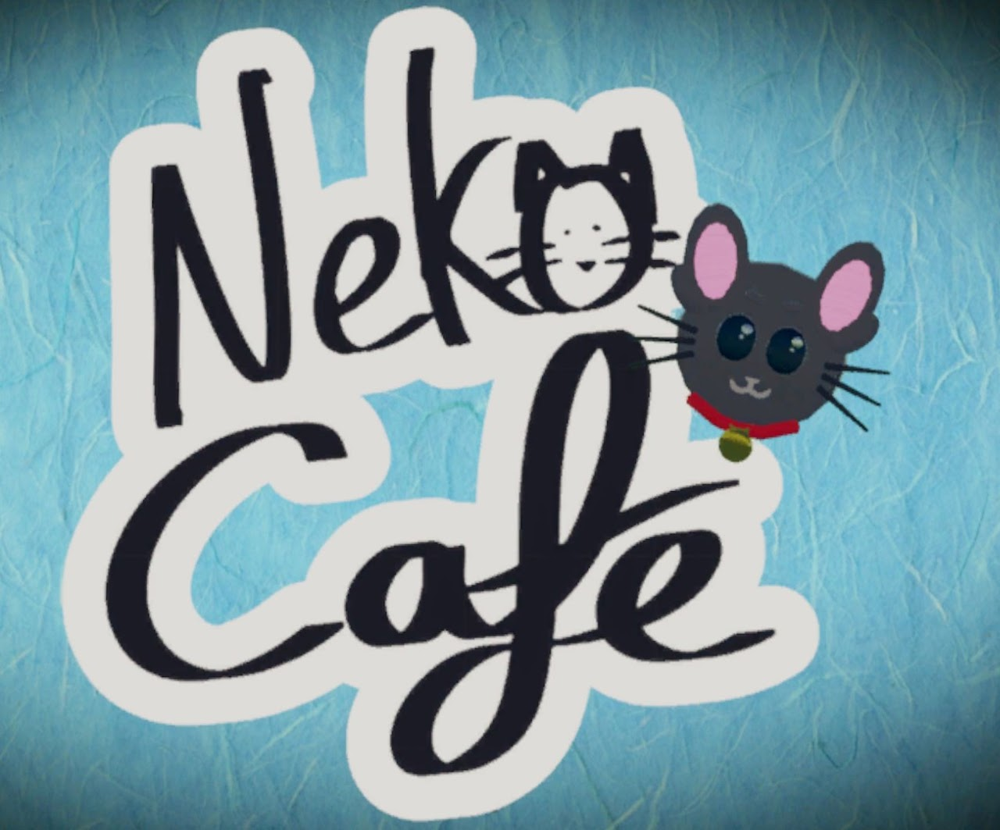
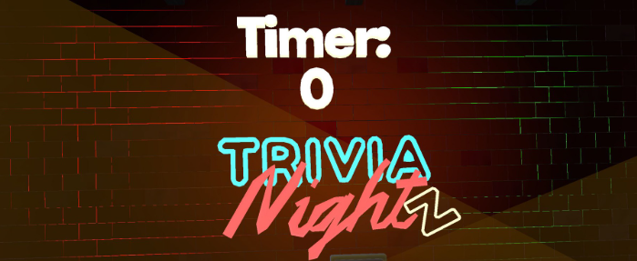
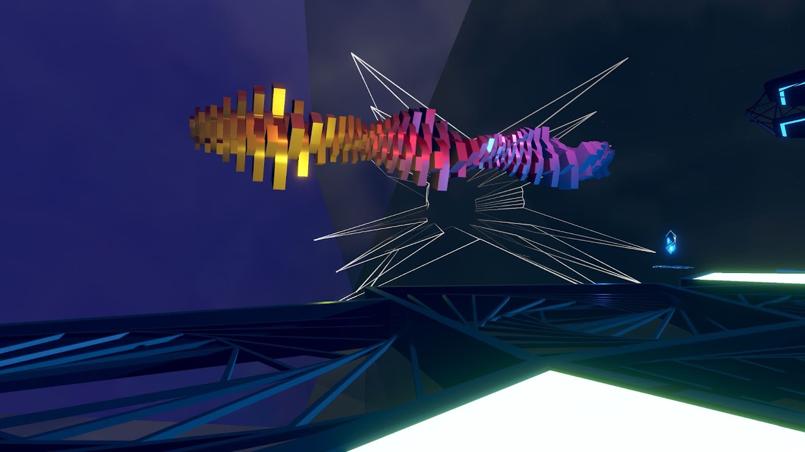
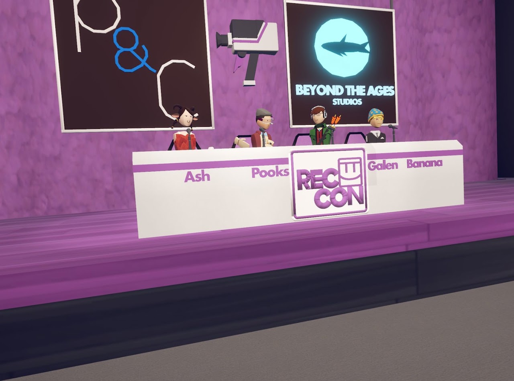
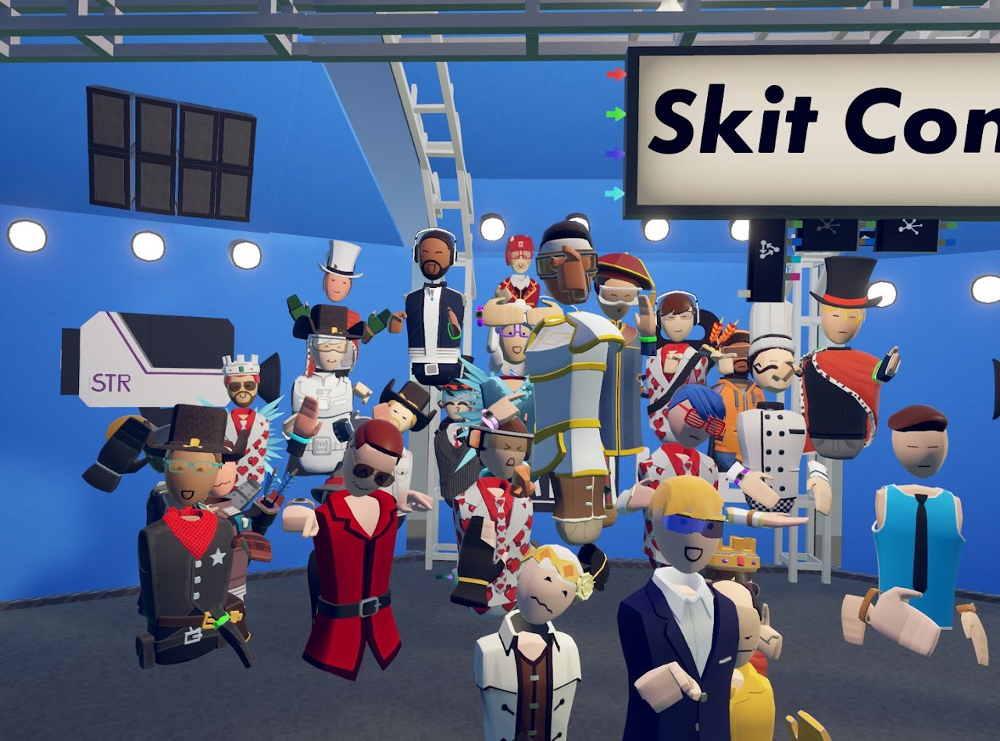
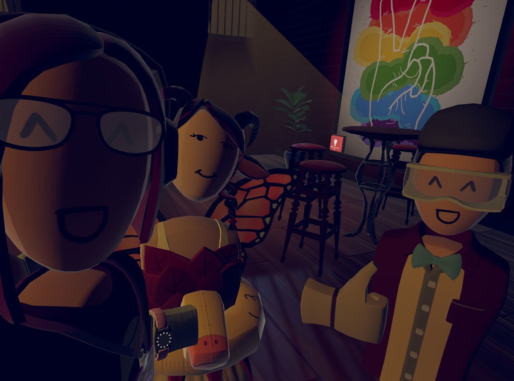
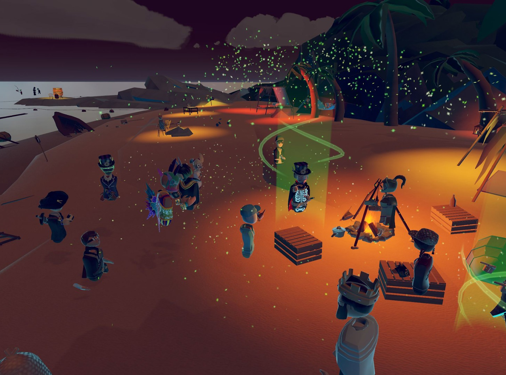

> open file: rec room
Rec Room
Large-scale events and rooms. Connection with users through events.
For 5+ years I have run and managed large-scale events and rooms in the UGC platform Rec Room. I hosted live trivia with back-and-forth interaction with up to 300 players at a time, promoting experiences I built on the platform.
15M+collective room visits
300players at one live trivia
5+years running rooms
Running several of Rec Room's top social hangout spaces for multiple years in a row, I also managed social content, the Discord and volunteer moderators.
Gallery







Also at IconINK (2021 to 2024)
- Produced the Rec Rocks concert and the AJR virtual ride.
- Led two teams of 10 volunteer moderators across time zones.